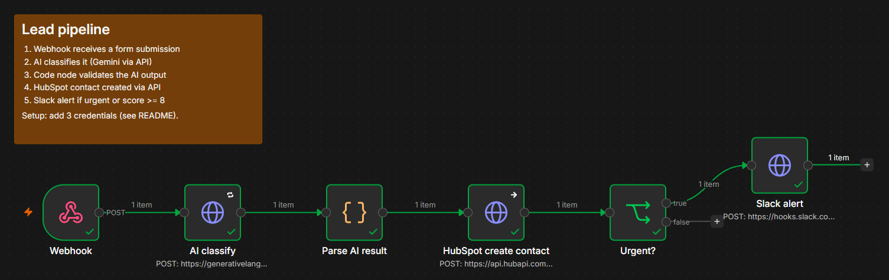
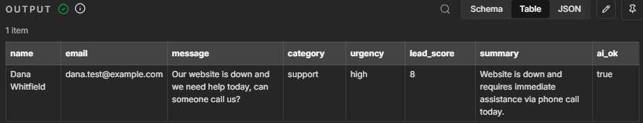
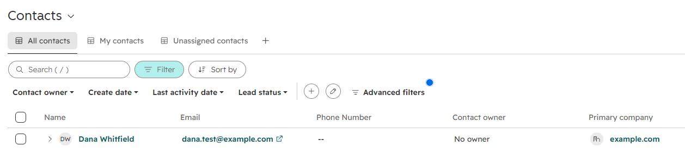
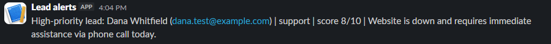

Workflows that read incoming requests, sort them with AI, update your CRM, and alert your team, built with n8n, APIs, and a cybersecurity background that keeps them safe.

When a customer submits a support request, AI reads the ticket, decides what it is and how urgent it is, saves the person to HubSpot, and posts an alert to Slack if it needs attention now. No one has to read, sort, or type anything.
The AI's answer is checked against allowed values, so a bad response can't break the workflow.
Retries the AI call, and a CRM error doesn't stop the team alert.
Each API key has only the permissions it needs and is locked to its own service.
This is one actual run of the workflow, captured from n8n, HubSpot, and Slack.
n8n catches the submission instantly.
category: support · urgency: high · score: 8 · "Website is down and requires immediate assistance via phone call today."

Contact created through the CRM API.

Score 8 or higher triggers a Slack message.

n8n workflows, webhooks, triggers, branching logic, error handling
LLM APIs (Gemini, Claude, OpenAI), prompt design, structured JSON output, output validation
REST APIs, HubSpot, Slack, API keys and bearer tokens, scopes
A.A.S. in Cybersecurity. Least-privilege access, secret handling, prompt-injection defense